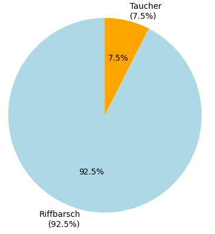
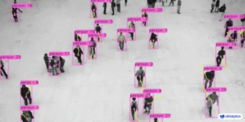
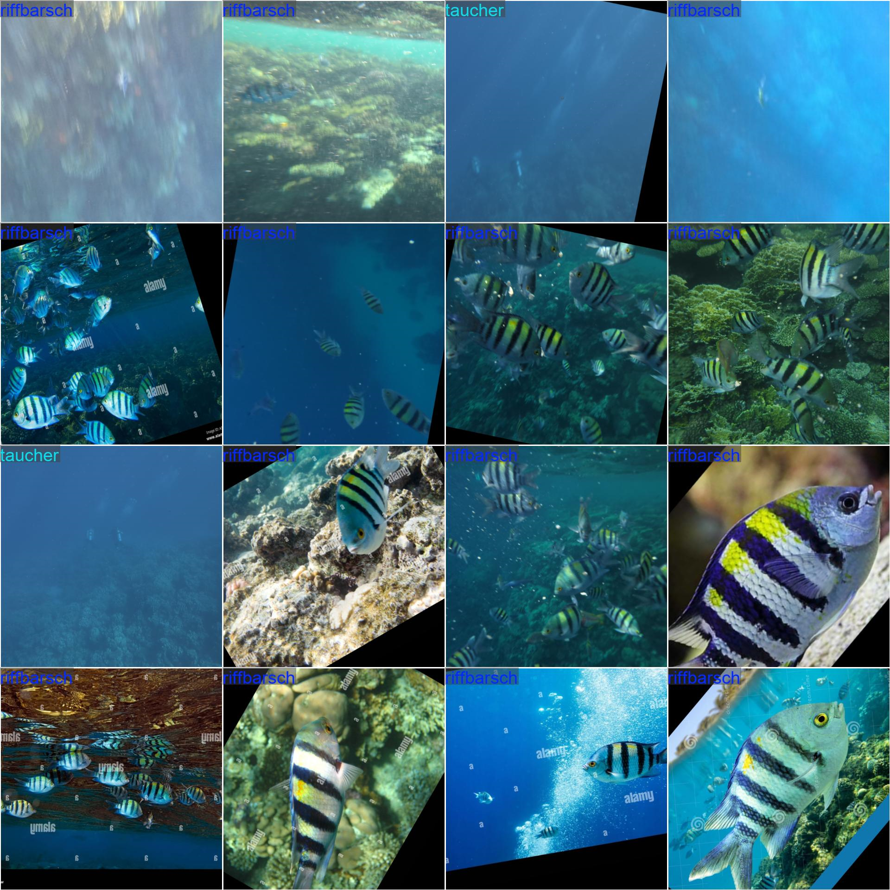
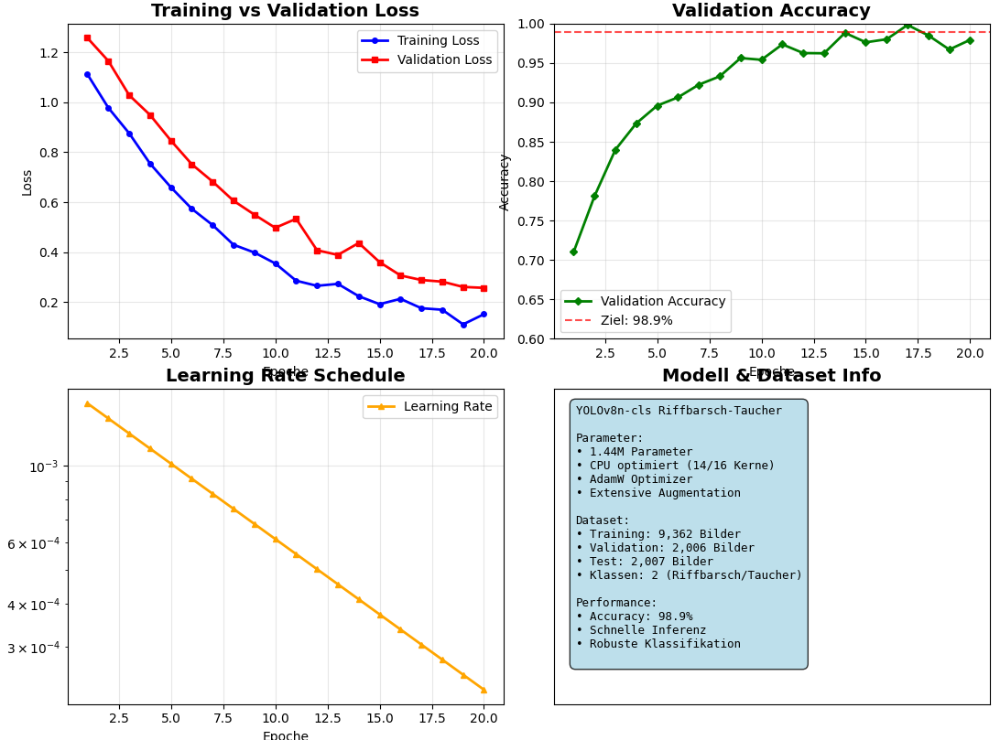

Objekterkennung mit Umgang mit Klassenungleichgewicht

Dieses Modul implementiert ein vollständiges YOLOv8n Training System mit Class Imbalance Handling für ultra-schnelle Riffbarsch-Taucher Klassifikation.


Das Modell analysiert systematisch alle Fehlklassifikationen um Verbesserungsmöglichkeiten zu identifizieren und zeigt, dass die meisten Fehler bei schwierigen Grenzfällen auftreten.

Warum YOLOv8n? Perfekte Balance zwischen Geschwindigkeit und Genauigkeit für Real-Time Unterwasser-Klassifikation